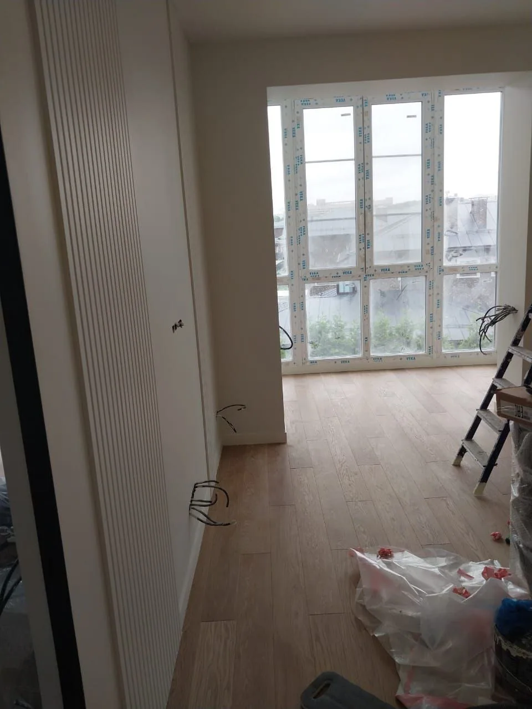
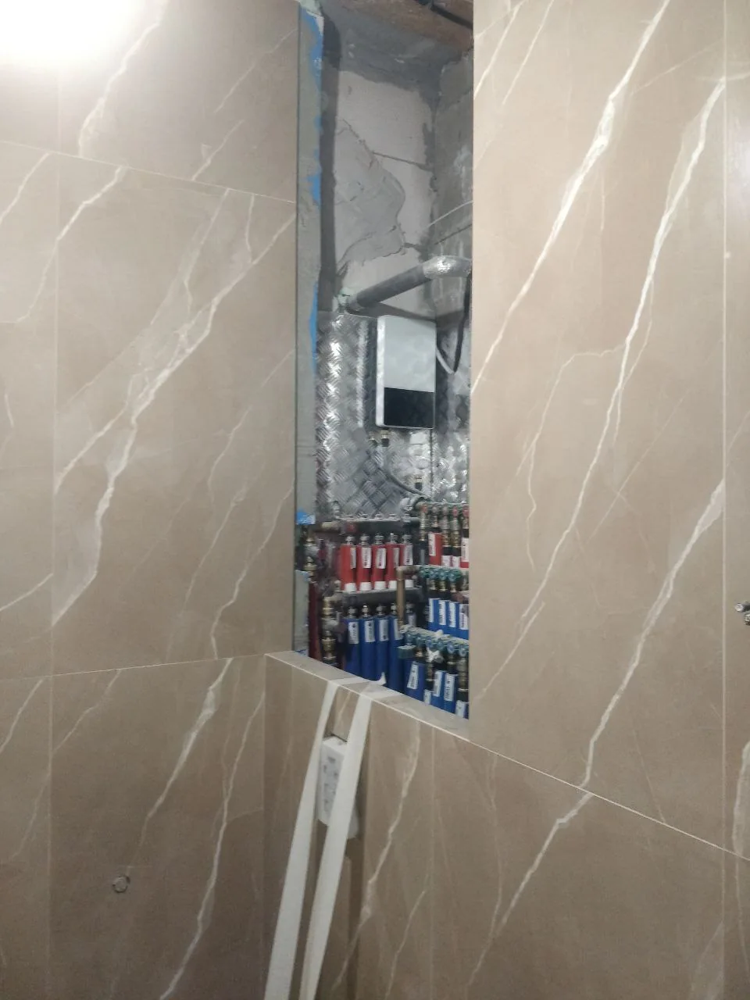
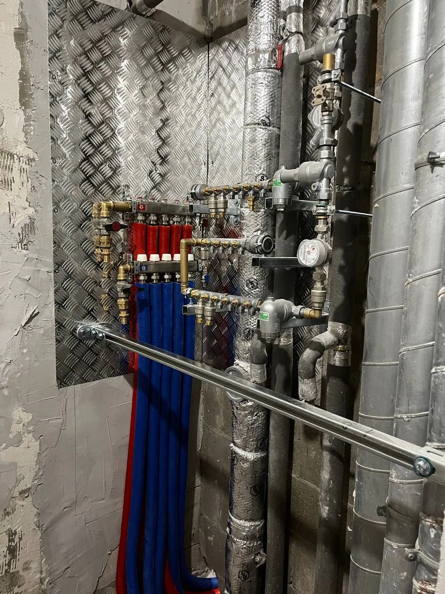

 До отделкиПосле отделки
До отделкиПосле отделкиКомната с панорамным окном
Сравните оконный проём до и после отделки. Стены окрасили, уложили светлое напольное покрытие и установили плинтус.

От первого замера до чистовой отделки.
Согласуем смету и график работ до начала ремонта.

До отделкиПосле отделкиСравните оконный проём до и после отделки. Стены окрасили, уложили светлое напольное покрытие и установили плинтус.


До облицовкиПосле облицовкиПосле монтажа труб облицевали стены плиткой под мрамор. Нишу оставили доступной для обслуживания.
Инженер осмотрит квартиру и обсудит с вами планировку, отделку и пожелания по материалам.
Согласуем перечень работ по помещениям, бюджет и последовательность этапов.
Прораб ведёт объект. Вы принимаете выполненные этапы и оплачиваете их по договору.
Покажите план квартиры или расскажите, что хотите изменить.
Подскажем, с чего начать, и договоримся о замере.